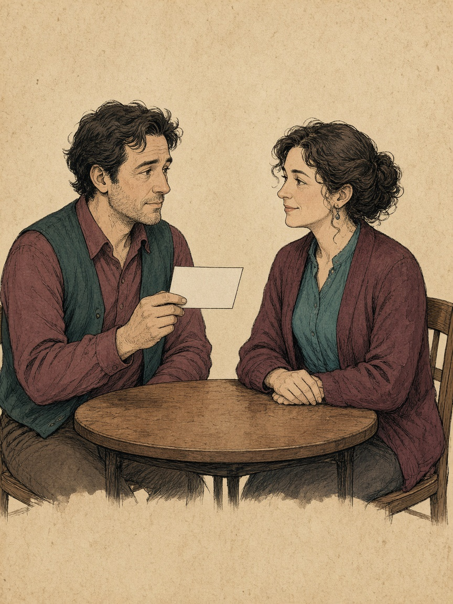
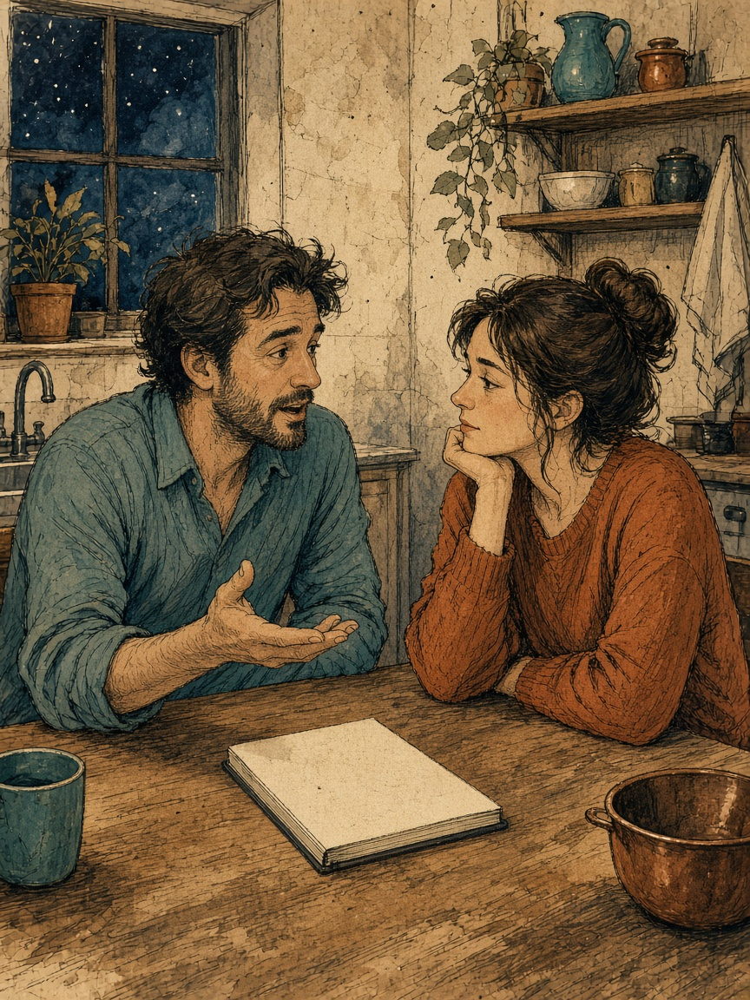
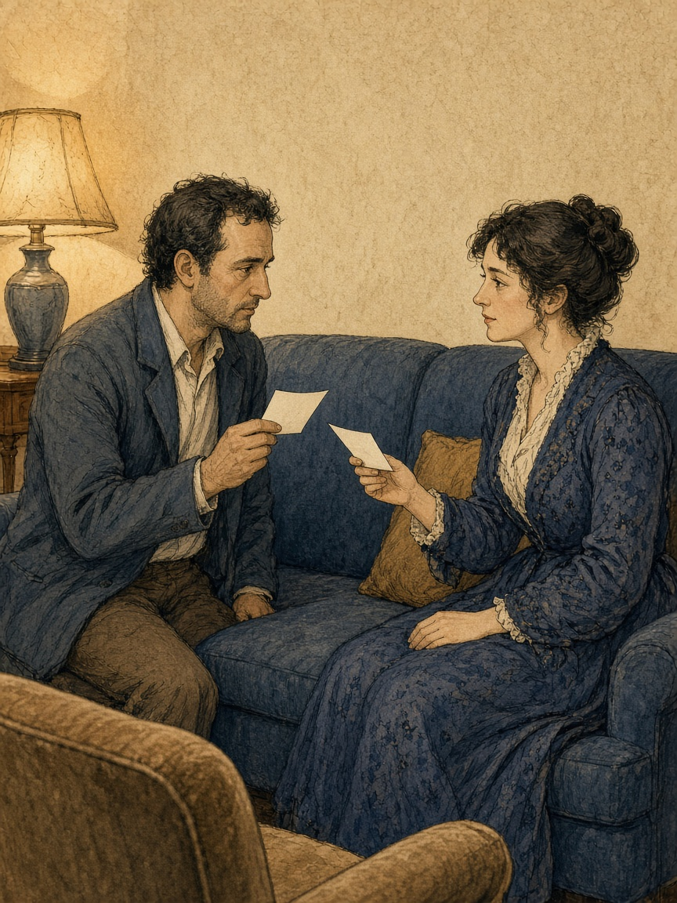
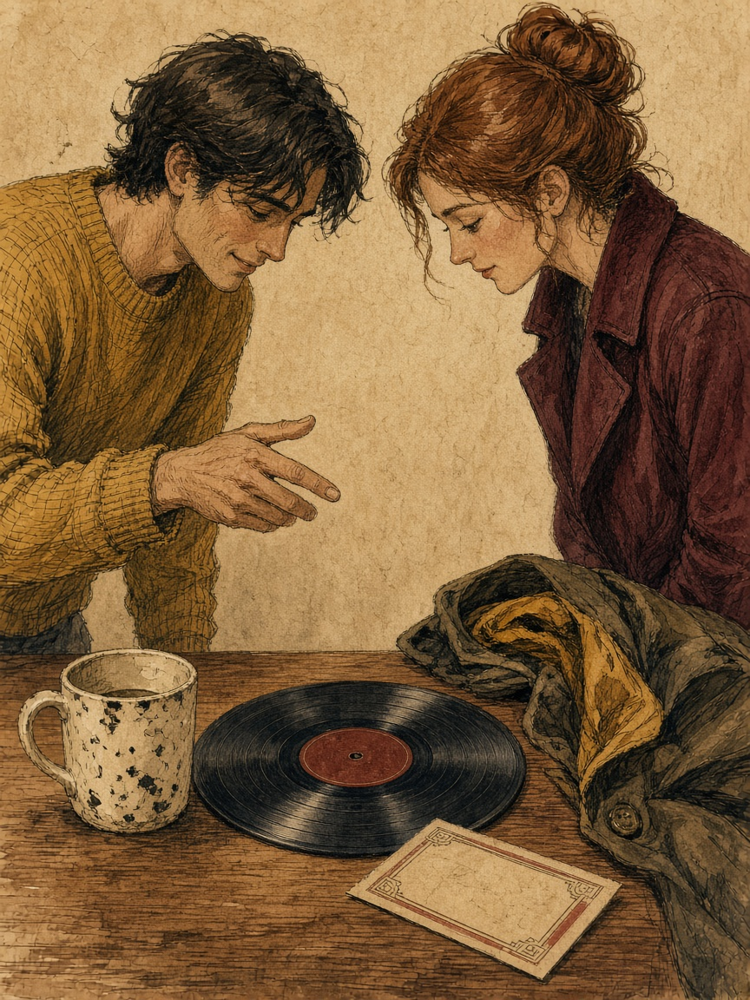
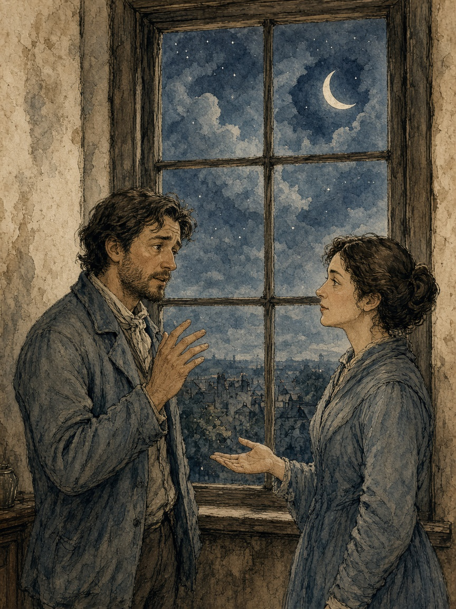
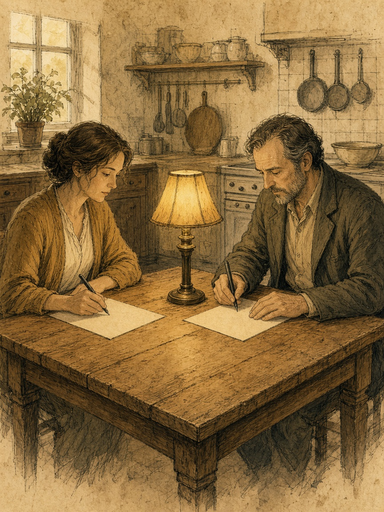
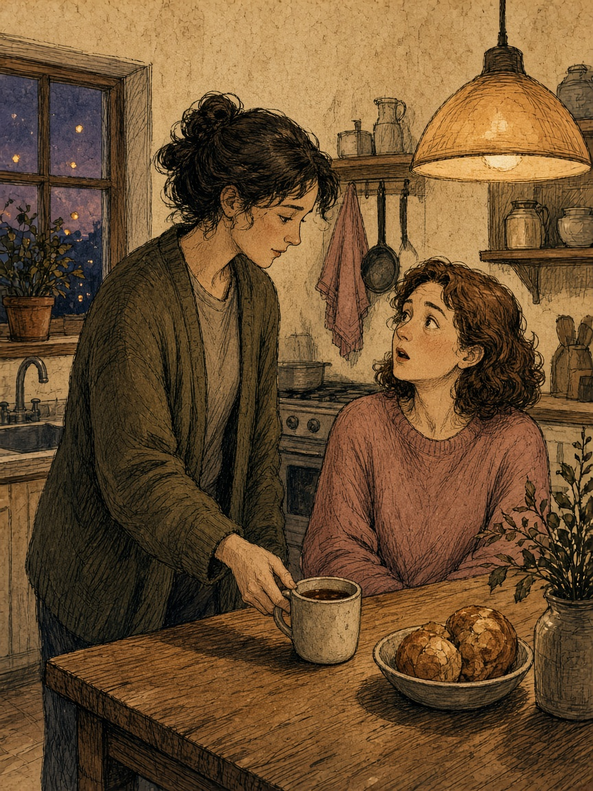
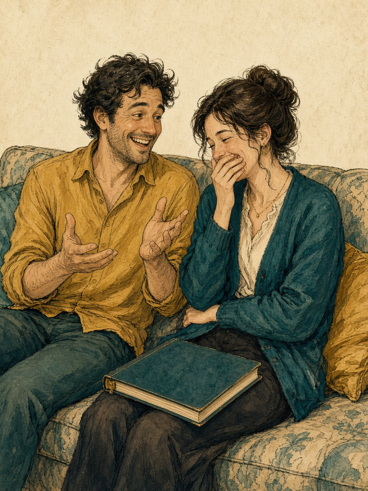
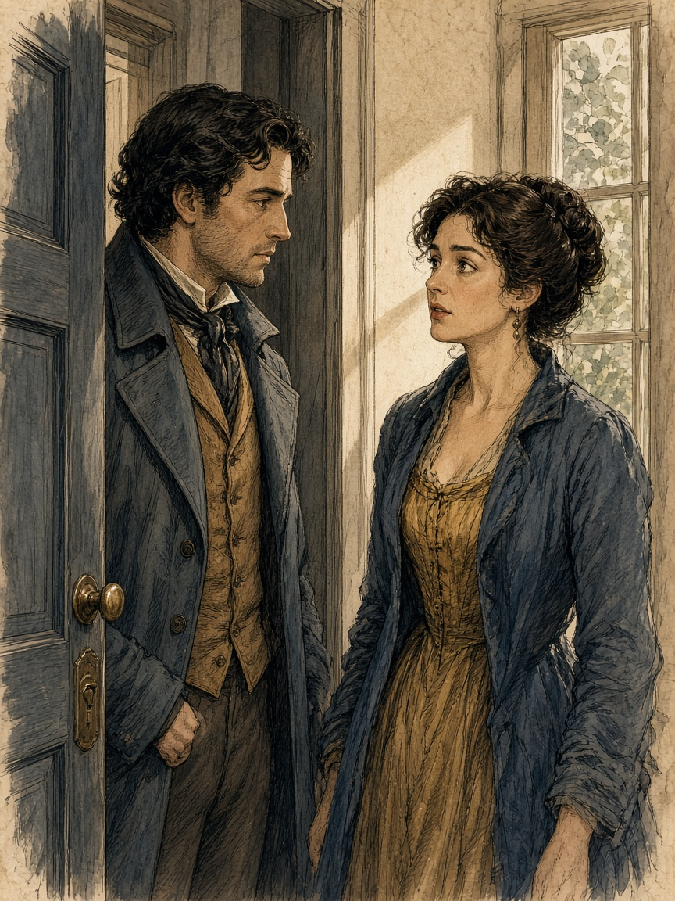
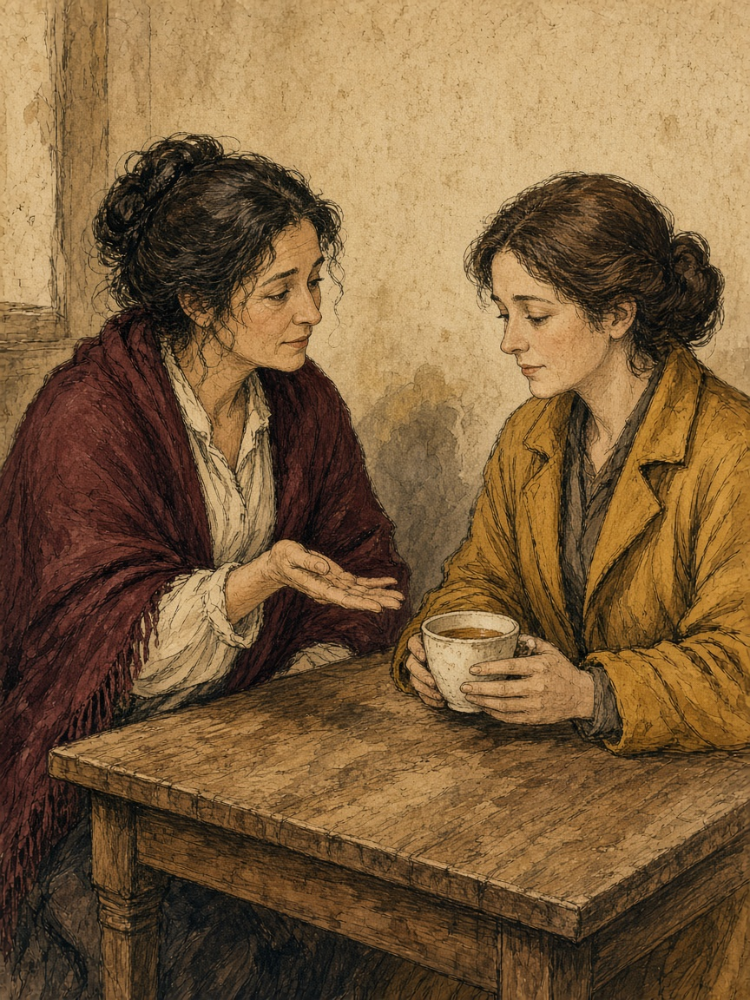

Part 01 · Knowing
The Art of Really Knowing Someone
For a few minutes you are a courteous stranger with a good ear, not a partner with a file.
Name one thing you had not known how to ask. Leave the rest on the paper.
Either of you may pass the whole card. Passing is a finished visit.

Part 01 · Knowing
The Art of Really Knowing Someone
One episode the relationship has not heard, told once, without a diagnosis.
The listener says one concrete detail they are keeping, not a moral. The teller may correct that detail.
If the episode is too live tonight, say so and choose another, or pass the card.

Part 01 · Knowing
The Art of Really Knowing Someone
Three questions you have never asked this person. Leave favorite colors in the other room.
Each of you names the question you are glad existed, even if you declined it.
A declined question is complete. Passing the card is complete.

Part 01 · Knowing
The Art of Really Knowing Someone
You curate four pieces of a life. Your partner is a visitor, not a critic.
The visitor names the exhibit they will remember, in the curator's words, and the curator may correct the label.
Any exhibit may stay in storage. Say "not on view" and continue.

Part 01 · Knowing
The Art of Really Knowing Someone
How you actually change your mind, told without a trophy.
If the reflection was fair, the teller says so in a few words. Stop there.
If you have no change you want to tell, pass. Passing is a complete card.

Part 10 · Story
The Past, the Present, and the Story of Us
Write the beginning twice, apart, before either voice can steer it.
Optional: one agreed fact and one uncertainty you will leave in. Or name that uncertainty and stop.
Stop if a live argument about faithfulness is waiting. Have it in plain time.
Skip any stretch you do not want replayed. No reason is required. You may stop after one scene.

Part 10 · Story
The Past, the Present, and the Story of Us
A small act you carried at a size the giver never heard. Not a performance of gratitude.
Read the columns once at their actual size. Leave the week alone.
Stop early if you want. Skip a third person's secret, and a sexual moment you have not both agreed to discuss.

Part 10 · Story
The Past, the Present, and the Story of Us
Four columns. A funny story does not have to be the meaningful one.
Then stop, before the hits become a second dinner.
Humiliating a partner, or a friend who is not here, stays off. Stories about sex, bodies, or family need a yes from both.
A nomination can move to a private margin with no case to argue. You may pass a column.

Part 10 · Story
The Past, the Present, and the Story of Us
Four beats: the smaller picture, the place, the detail that broke it, the wider one.
Then stop. A tour of every misreading is a different week.
Pass an accusation or an open injury, unless you both want that scene. No third person's secret.

Part 10 · Story
The Past, the Present, and the Story of Us
Finish one thanks that lost the race with the week. The cost may be wrong.
Ask once if a sentence may be kept. A no still leaves the spoken thanks complete. Then stop.
Do not thank a partner for harm endured, silence, or unfair work treated as a gift. A request disguised as thanks gets cut.
If resentment is still tangled in it, pick a smaller finished act or postpone. You may decline a thanks that sweetens a hard period.